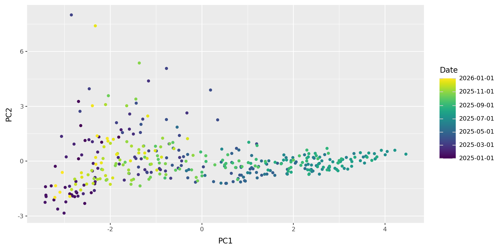
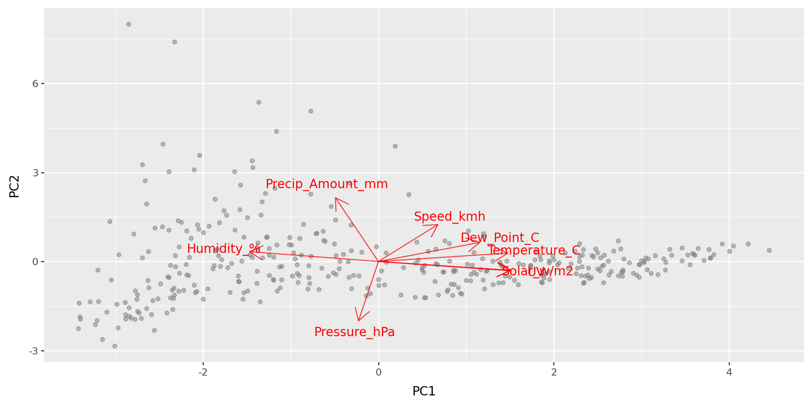
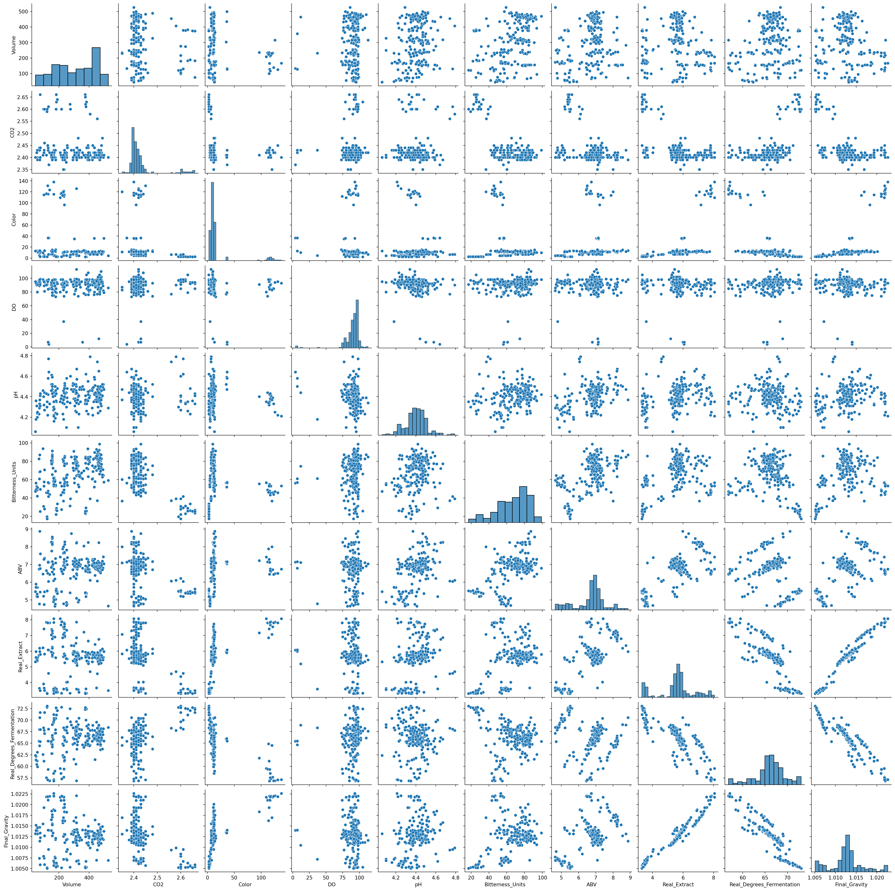
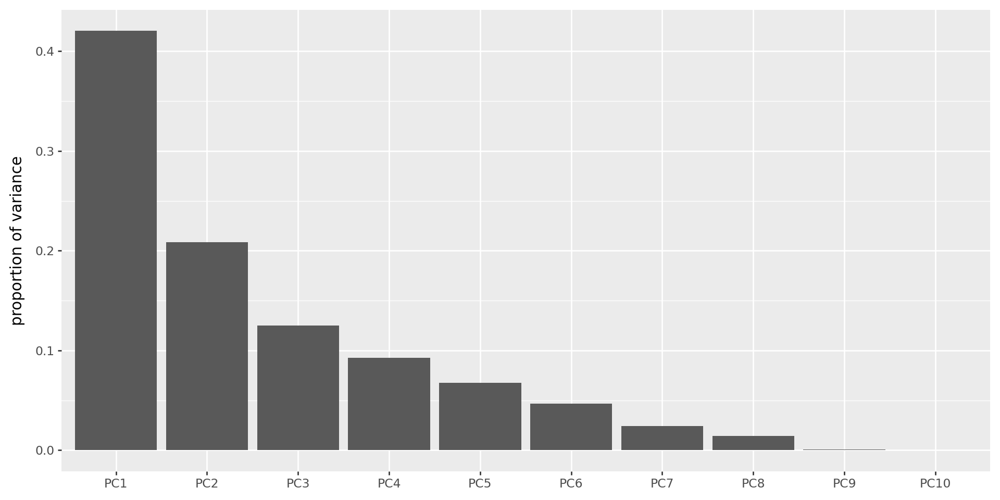
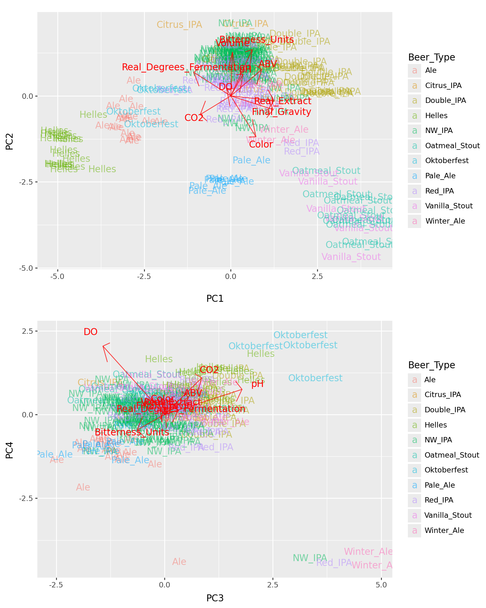

import pandas as pd
import plotnine as p9
import sklearnDimension reduction and PCA
Multivariate data
We need multivariate statistics when we’re dealing with lots (more than one?) variables.
Goals: for this and next week:
Describe and visualize multivariate data.
Distinguish groups using many variables (e.g., cases from controls).
Both things involve dimension reduction, because we see things in \({} \le 3\) dimensions, and categorization is low-dimensional.
The setting
We have observations of many variables:
\[ \mathbf{x}_i = (x_{i1}, x_{i2}, \ldots, x_{im}) . \]
so
\[ x_{ij} = (\text{measurement of $j^\text{th}$ variable in $i^\text{th}$ subject}) \]
def biplot(pcs, loadings, a=1, b=2, labels=None):
f = (pcs.select_dtypes("float").std(axis=0) / loadings.select_dtypes("float").std(axis=0)).mean()
p = (
pcs
>>
p9.ggplot(p9.aes(x=f"PC{a}", y=f"PC{b}"))
)
if labels is None:
p += p9.geom_point(color='grey', alpha=0.5)
else:
p += p9.geom_text(mapping=p9.aes(label=labels, color=labels), alpha=0.5)
p = ( p
+ p9.geom_segment(
data=loadings,
mapping=p9.aes(xend=f"PC{a} * {f}", yend=f"PC{b} * {f}"),
x=0, y=0, arrow=p9.arrow(),
color='red', alpha=0.75,
)
+ p9.geom_text(
data=loadings,
mapping=p9.aes(x=f"PC{a} * {f} * 1.2", y=f"PC{b} * {f} * 1.2", label="variable"),
color='red'
)
)
return pPrincipal component analysis (PCA)
Primary aims of PCA
Variable reduction - reduce to a small number of “composite” variables that adequately summarize the original information (dimension reduction).
Ordination - Reveal patterns in the data that could not be found by analyzing each variable separately.
Quick example: weather
import glob
import pandas as pd
import numpy as np
def make_date(x):
"""
Makes a datetime object out of the Date and Time columns
"""
return pd.to_datetime(x['Date'] + " " + x['Time'], format="%Y/%m/%d %I:%M %p")
def compute_precip(x):
"""
Returns for each entry the amount of precipitation that has accumulated
in the previous five minutes, inserting NA for any entry for which either:
- the difference in accumulated precipitation is negative, or
- the previous entry was not five minutes ago.
"""
dt = x["Date"].diff().dt.seconds
dp = np.maximum(0, x['Precip_Accum_mm'].diff()).mask(dt != 300, pd.NA)
return dp
def read_weather_files(ddir):
"""
Reads in all CSV files in the directory `ddir`, and returns a concatenated
data frame. For each file, assumes that file names are of the form
"something_CODE.csv"; and inserts "CODE into the "code" column of the result
for that file.
"""
wfiles = glob.glob(ddir + "/" + "*.csv")
assert len(wfiles) > 0, "No files found."
xl = []
for f in wfiles:
x = pd.read_csv(f).convert_dtypes()
x['Date'] = make_date(x)
x['code'] = f.split("/")[-1].split("_")[0] ## change "/" to "\\" on windows
x['Precip_Amount_mm'] = compute_precip(x)
xl.append(x)
return pd.concat(xl)
weather = read_weather_files("data/weather_data")Daily means in 2025:
w = (
weather
.query("Date.dt.year == 2025")
.drop(['Time', 'Wind', 'code', 'Gust_kmh', 'Precip_Accum_mm', 'Precip_Rate_mm'], axis=1)
.assign(Date=lambda df: df['Date'].dt.round('d'))
.groupby(['Date'])
.mean()
.transform(lambda x: (x - x.mean()) / x.std())
)
w| Temperature_C | Dew_Point_C | Humidity_% | Speed_kmh | Pressure_hPa | UV | Solar_w/m2 | Precip_Amount_mm | |
|---|---|---|---|---|---|---|---|---|
| Date | ||||||||
| 2025-01-01 | -1.103683 | -0.754105 | 1.432277 | -0.688402 | -0.333108 | -1.28932 | -1.289326 | 0.060285 |
| 2025-01-02 | -0.750046 | -0.22054 | 1.418074 | -0.51612 | -0.43889 | -1.270094 | -1.283662 | 2.460893 |
| 2025-01-03 | -0.577299 | 0.061219 | 1.456616 | -0.799844 | -1.349499 | -1.304964 | -1.312659 | 3.691147 |
| 2025-01-04 | -0.730924 | -0.399995 | 0.985563 | 1.074147 | -0.725203 | -1.216742 | -1.235342 | 0.43468 |
| 2025-01-05 | -0.599344 | -0.028398 | 1.334261 | 0.581298 | 0.59932 | -1.315485 | -1.321145 | 1.315605 |
| ... | ... | ... | ... | ... | ... | ... | ... | ... |
| 2025-12-28 | -1.277503 | -1.215709 | 1.048776 | -1.300383 | 2.020023 | -1.168454 | -1.169445 | -0.310472 |
| 2025-12-29 | -1.590828 | -1.565987 | 1.284481 | -1.004858 | 2.107146 | -1.191413 | -1.200978 | -0.383765 |
| 2025-12-30 | -1.66297 | -1.805363 | 1.024136 | -1.254284 | 1.315914 | -1.077765 | -1.078012 | -0.38382 |
| 2025-12-31 | -1.708064 | -1.861141 | 1.068244 | -1.513409 | 0.565748 | -1.108401 | -1.120958 | -0.380528 |
| 2026-01-01 | -1.602625 | -1.594026 | 1.262258 | -1.60991 | -0.562109 | -1.082476 | -1.067752 | -0.365624 |
366 rows × 8 columns
PCA
pca = sklearn.decomposition.PCA(n_components=5)
wpca = pca.fit(w)
w_pcs = pd.DataFrame(
wpca.transform(w), index=w.index, columns=[f"PC{k+1}" for k in range(wpca.n_components_)]
).reset_index()
w_loadings = (
pd.DataFrame(wpca.components_.T, index=w.columns, columns=[f"PC{k+1}" for k in range(wpca.n_components_)])
.reset_index(names='variable')
)p9.ggplot(w_pcs, p9.aes(x="PC1", y="PC2", color="Date")) + p9.geom_point()
What do those axes mean?
biplot(w_pcs, w_loadings)
PCA: how it works
Reducing dimesions
Say we’ve got a data matrix \(x_{ij}\) of \(n\) observations in \(m\) variables,
but we want to make do with fewer variables - say, only \(k\) of them.
Idea: Let’s pick a few linear combinations of the variables that best captures variability within the dataset. For instance, strongly correlated variables will be combined into one.
Try it out: setosa.io/ev/principal-component-analysis/
Notation:
These new variables are the principal components, \[u^{(1)}, \ldots, u^{(k)} . \]
The importance of each variable to the principal components - i.e., the coefficients of the linear combination - are the loadings, \[v^{(1)}, \ldots, v^{(k)} . \]
So, the position of the \(i\)th data point on the \(\ell\)th PC is \[ u_i^{(\ell)} = v_1^{(\ell)} x_{i1} + v_2^{(\ell)} x_{i2} + \cdots v_m^{(\ell)} x_{im} . \]
Geometric interpretation
The loadings are the directions in multidimensional space that explain most variation in the data.
The PCs are the coordinates of the data along these directions.
These directions are orthogonal, and the resulting variables are uncorrelated.
A model for PCA
The approximation to the data matrix using only \(k\) PCs is: \[ x_{ij} \approx u_i^{(1)} v_j^{(1)} + u_i^{(2)} v_j^{(2)} + \cdots + u_i^{(k)} v_j^{(k)} . \]
This is the best possible \(k\)-dimensional approximation, in the least-squares sense, so is the MLE for the low-dimensional model with Gaussian noise.
Also known as
PCA is also called “eigenanalysis” because (as usually computed), the PCs are eigenvectors of the covariance matrix.
The eigenvalues are \[ \lambda_\ell = \sum_{i=1}^n \left(u_i^{(\ell)}\right)^2, \] and they partition the total variance: \[ \lambda_1 + \lambda_2 + \cdots + \lambda_m = \sum_{ij} (x_{ij} - \bar x_j)^2 . \]
Interpretation
- PCs: Observations that are close in PC space are similar.
- Loadings: high values indicate a strong correlation with that PC (positive or negative).
Sometimes PCs are rotated to improve interpretability.
What next?
The PCs are nice new variables you can use in any analysis!
Example: Does (thing you’re interested in) correlate with the top three climate PCs?
Beer
Example: beer
We’ll use this dataset of local beer:
beer = (
pd.read_csv("data/Beer_Specs.csv")
.convert_dtypes()
.rename(columns=lambda x: x.strip())
.dropna()
.reset_index() # omitting this leads to VERY STRANGE problems later
)
beer_vars = ["Volume", "CO2", "Color", "DO", "pH", "Bitterness_Units", "ABV", "Real_Extract", "Real_Degrees_Fermentation", "Final_Gravity"]
beer = beer.loc[:,["Beer_Type"] + beer_vars]
beer| Beer_Type | Volume | CO2 | Color | DO | pH | Bitterness_Units | ABV | Real_Extract | Real_Degrees_Fermentation | Final_Gravity | |
|---|---|---|---|---|---|---|---|---|---|---|---|
| 0 | Ale | 250 | 2.41 | 4.7 | 80 | 4.1 | 55.8 | 4.86 | 3.63 | 68.47 | 1.00725 |
| 1 | Ale | 178 | 2.43 | 4.69 | 86 | 4.24 | 53.0 | 5.03 | 3.44 | 70.38 | 1.00624 |
| 2 | Ale | 70 | 2.44 | 4.9 | 89 | 4.29 | 60.75 | 4.77 | 3.64 | 67.98 | 1.00742 |
| 3 | Ale | 102 | 2.43 | 5.03 | 89 | 4.32 | 57.5 | 4.74 | 3.65 | 67.81 | 1.00748 |
| 4 | Ale | 173 | 2.4 | 4.39 | 82 | 4.41 | 59.25 | 4.64 | 3.68 | 67.16 | 1.00773 |
| ... | ... | ... | ... | ... | ... | ... | ... | ... | ... | ... | ... |
| 216 | Vanilla_Stout | 117 | 2.41 | 116.84 | 90 | 4.43 | 45.65 | 6.65 | 7.84 | 57.55 | 1.02182 |
| 217 | Vanilla_Stout | 125 | 2.45 | 131.21 | 95 | 4.22 | 45.65 | 6.5 | 7.81 | 57.1 | 1.02186 |
| 218 | Vanilla_Stout | 100 | 2.42 | 114.81 | 95 | 4.32 | 52.85 | 7.29 | 7.42 | 61.14 | 1.01929 |
| 219 | Vanilla_Stout | 224 | 2.4 | 113.7 | 98 | 4.34 | 46.2 | 7.88 | 6.86 | 64.86 | 1.01626 |
| 220 | Vanilla_Stout | 230 | 2.35 | 120.0 | 83 | 4.37 | 36.55 | 8.0 | 7.07 | 64.53 | 1.01693 |
221 rows × 11 columns
Beer type
beer['Beer_Type'].value_counts()Beer_Type
NW_IPA 85
Red_IPA 34
Double_IPA 20
Ale 18
Helles 17
Citrus_IPA 14
Oatmeal_Stout 11
Pale_Ale 7
Vanilla_Stout 6
Winter_Ale 5
Oktoberfest 4
Name: count, dtype: Int64Goals:
- Describe major axes of variation between beer batches.
- Look for variation not related to taste/style.
- Make a pretty plot.
import seaborn as sns
import matplotlib.pyplot as plt
sns.pairplot(beer)
plt.show();
PCA: how to do it
Practical considerations
- Only use numeric variables - omit factors.
- Variables should all be on the same scale, at least roughly.
- Variables should also probably be centered.
… however,
- Beware outliers.
- Transformations may be a good idea.
- Missing data must be removed or imputed.
- Consider replacing highly skewed variables with ranks.
sklearn.PCA
class sklearn.decomposition.PCA(n_components=None, *, copy=True, whiten=False, svd_solver='auto', tol=0.0, iterated_power='auto', n_oversamples=10, power_iteration_normalizer='auto', random_state=None)
[source]
Principal component analysis (PCA).
Linear dimensionality reduction using Singular Value Decomposition of the data to project it to a lower dimensional space. The input data is centered but not scaled for each feature before applying the SVD.
It uses the LAPACK implementation of the full SVD or a randomized truncated SVD by the method of Halko et al. 2009, depending on the shape of the input data and the number of components to extract.
With sparse inputs, the ARPACK implementation of the truncated SVD can be used (i.e. through scipy.sparse.linalg.svds). Alternatively, one may consider TruncatedSVD where the data are not centered.
Notice that this class only supports sparse inputs for some solvers such as “arpack” and “covariance_eigh”. See TruncatedSVD for an alternative with sparse data.
For a usage example, see Principal Component Analysis (PCA) on Iris Dataset
Read more in the User Guide.
Parameters:
n_componentsint, float or ‘mle’, default=None
Number of components to keep. if n_components is not set all components are kept:
n_components == min(n_samples, n_features)
If n_components == 'mle' and svd_solver == 'full', Minka’s MLE is used to guess the dimension. Use of n_components == 'mle' will interpret svd_solver == 'auto' as svd_solver == 'full'.
If 0 < n_components < 1 and svd_solver == 'full', select the number of components such that the amount of variance that needs to be explained is greater than the percentage specified by n_components.
If svd_solver == 'arpack', the number of components must be strictly less than the minimum of n_features and n_samples.
Hence, the None case results in:
n_components == min(n_samples, n_features) - 1
copybool, default=True
If False, data passed to fit are overwritten and running fit(X).transform(X) will not yield the expected results, use fit_transform(X) instead.
whitenbool, default=False
When True (False by default) the components_ vectors are multiplied by the square root of n_samples and then divided by the singular values to ensure uncorrelated outputs with unit component-wise variances.
Whitening will remove some information from the transformed signal (the relative variance scales of the components) but can sometime improve the predictive accuracy of the downstream estimators by making their data respect some hard-wired assumptions.
svd_solver{‘auto’, ‘full’, ‘covariance_eigh’, ‘arpack’, ‘randomized’}, default=’auto’
“auto” :
The solver is selected by a default ‘auto’ policy is based on X.shape and n_components: if the input data has fewer than 1000 features and more than 10 times as many samples, then the “covariance_eigh” solver is used. Otherwise, if the input data is larger than 500x500 and the number of components to extract is lower than 80% of the smallest dimension of the data, then the more efficient “randomized” method is selected. Otherwise the exact “full” SVD is computed and optionally truncated afterwards.
“full” :
Run exact full SVD calling the standard LAPACK solver via scipy.linalg.svd and select the components by postprocessing
“covariance_eigh” :
Precompute the covariance matrix (on centered data), run a classical eigenvalue decomposition on the covariance matrix typically using LAPACK and select the components by postprocessing. This solver is very efficient for n_samples >> n_features and small n_features. It is, however, not tractable otherwise for large n_features (large memory footprint required to materialize the covariance matrix). Also note that compared to the “full” solver, this solver effectively doubles the condition number and is therefore less numerical stable (e.g. on input data with a large range of singular values).
“arpack” :
Run SVD truncated to n_components calling ARPACK solver via scipy.sparse.linalg.svds. It requires strictly 0 < n_components < min(X.shape)
“randomized” :
Run randomized SVD by the method of Halko et al.beer_scaled = beer.loc[:,beer_vars].transform(lambda x: x/x.std())
bpca = sklearn.decomposition.PCA().fit(beer_scaled)
bpcaPCA()In a Jupyter environment, please rerun this cell to show the HTML representation or trust the notebook.
On GitHub, the HTML representation is unable to render, please try loading this page with nbviewer.org.
Parameters
What it means
> vars(bpca)singular_values_: standard deviations of the PCscomponents_: loadings of the variables on each PCmean_: subtracted from columns of the data.transform( ): the actual PCs
The PCs:
# this concat fails if index was not reset above
beer_pcs = pd.concat([beer[['Beer_Type']], pd.DataFrame(
bpca.transform(beer_scaled),
columns=[f"PC{k+1}" for k in range(bpca.n_components_)]
)], axis=1)
beer_pcs| Beer_Type | PC1 | PC2 | PC3 | PC4 | PC5 | PC6 | PC7 | PC8 | PC9 | PC10 | |
|---|---|---|---|---|---|---|---|---|---|---|---|
| 0 | Ale | -2.973023 | -1.094093 | -1.878669 | -2.184777 | 0.367597 | 0.219694 | -0.068611 | -0.142455 | 0.064190 | 0.019083 |
| 1 | Ale | -3.346172 | -0.905173 | -0.989085 | -1.352055 | -0.358150 | 0.081469 | -0.670787 | 0.117211 | 0.164764 | 0.038441 |
| 2 | Ale | -2.841954 | -1.311178 | -0.951608 | -1.206946 | -1.053359 | -0.706915 | -0.472784 | 0.597061 | 0.019874 | 0.005699 |
| 3 | Ale | -2.769752 | -1.220346 | -0.799757 | -1.142196 | -0.858998 | -0.875206 | -0.697963 | 0.412174 | 0.021041 | 0.002927 |
| 4 | Ale | -2.366372 | -0.746698 | -0.217984 | -1.494435 | -0.448576 | -1.397361 | -1.137330 | 0.353767 | 0.017062 | 0.003910 |
| ... | ... | ... | ... | ... | ... | ... | ... | ... | ... | ... | ... |
| 216 | Vanilla_Stout | 3.833989 | -3.853438 | 0.177123 | 0.741225 | 0.428461 | -0.328375 | -0.530418 | 0.291302 | 0.035955 | 0.009759 |
| 217 | Vanilla_Stout | 3.474291 | -4.692110 | -1.171308 | 0.787388 | 0.940529 | 0.459093 | 0.356526 | 0.521737 | -0.049129 | -0.025082 |
| 218 | Vanilla_Stout | 3.039078 | -3.299014 | -0.480034 | 0.823423 | 0.033158 | 1.072435 | -0.403705 | 0.543886 | -0.001552 | -0.021968 |
| 219 | Vanilla_Stout | 2.257521 | -2.263860 | -0.294004 | 1.159509 | 0.506022 | 1.974627 | -1.224009 | 0.129964 | -0.065554 | -0.066061 |
| 220 | Vanilla_Stout | 2.799478 | -2.501756 | 0.384693 | 0.230813 | 0.784106 | 2.103615 | -1.768945 | -0.400474 | -0.008832 | -0.054651 |
221 rows × 11 columns
The loadings:
beer_loadings = (
pd.DataFrame(bpca.components_.T, index=beer_vars, columns=[f"PC{k+1}" for k in range(bpca.n_components_)])
.reset_index(names='variable')
)
beer_loadings| variable | PC1 | PC2 | PC3 | PC4 | PC5 | PC6 | PC7 | PC8 | PC9 | PC10 | |
|---|---|---|---|---|---|---|---|---|---|---|---|
| 0 | Volume | 0.018263 | 0.486346 | -0.049738 | 0.118799 | 0.847481 | -0.037943 | 0.038643 | -0.159262 | 0.002970 | 0.004055 |
| 1 | CO2 | -0.337880 | -0.208345 | 0.330399 | 0.420175 | 0.119751 | 0.048867 | 0.659141 | 0.319349 | -0.057922 | -0.013597 |
| 2 | Color | 0.277878 | -0.455878 | -0.015127 | 0.146180 | 0.365924 | 0.320596 | -0.431828 | 0.518344 | -0.030603 | -0.024225 |
| 3 | DO | -0.047083 | 0.081557 | -0.544659 | 0.782771 | -0.195629 | -0.130434 | -0.154842 | -0.049838 | 0.001642 | -0.000806 |
| 4 | pH | 0.134648 | 0.241974 | 0.685704 | 0.287802 | -0.121806 | -0.440509 | -0.383736 | 0.118754 | 0.007313 | 0.001895 |
| 5 | Bitterness_Units | 0.237681 | 0.516101 | -0.241142 | -0.175683 | -0.169924 | -0.077631 | 0.210272 | 0.713283 | 0.014403 | 0.006185 |
| 6 | ABV | 0.342154 | 0.292998 | 0.211991 | 0.200191 | -0.201066 | 0.652824 | 0.079055 | -0.196516 | -0.446209 | 0.038592 |
| 7 | Real_Extract | 0.476918 | -0.053694 | 0.059659 | 0.113088 | -0.026884 | 0.053319 | 0.234122 | -0.147597 | 0.553771 | -0.605386 |
| 8 | Real_Degrees_Fermentation | -0.409087 | 0.262133 | 0.120628 | 0.049679 | -0.098648 | 0.485478 | -0.214267 | 0.077499 | 0.638401 | 0.204995 |
| 9 | Final_Gravity | 0.468590 | -0.152406 | 0.009496 | 0.078816 | 0.025909 | -0.107666 | 0.234836 | -0.110463 | 0.286558 | 0.767571 |
How many PCs should I use?
- PCA gives you as many PCs as variables.
Depends - what for?
Some answers:
- Visualization: as many as make sense (but beware overinterpretation).
- Further analysis: as many as your method can handle.
- Until an obvious break in the scree plot.
The scree plot
Shows the variance explained by each PC (these are always decreasing).
(
pd.DataFrame({'pc' : [f"PC{k+1}" for k in range(bpca.n_components_)],
'variances' : bpca.singular_values_**2 / (bpca.singular_values_**2).sum()})
>> p9.ggplot(p9.aes(x='reorder(pc,variances,ascending=False)', y='variances'))
+ p9.geom_col(stat='identity') + p9.labs(x='', y='proportion of variance')
)
The top four PCs
(biplot(beer_pcs, beer_loadings, a=1, b=2, labels="Beer_Type")
/ biplot(beer_pcs, beer_loadings, a=3, b=4, labels="Beer_Type")
) + p9.theme(figure_size=(8,10))
Gotchas
- PCs are only well-defined up to sign (\(\pm\)) and scale.
- Some programs report PCs normalized to have SD 1; others don’t.
- Many ways to do roughly the same thing (choices involving scaling).
sklearnfirst subtracts means from columns, so PCs will all have zero mean.
Your turn: penguins
Have a look at the Palmer Penguins dataset (which is provided already in plotnine).
Workflow:
- load in data, remove NAs
- do PCA
- make plots of the first two PCs, colored by categorical variables (species, island, sex, …)
- look at loadings (just do this by hand, no need to pull in the fancy
biplotfunction) to interpret the PCs
from plotnine.data import penguinsYour turn: wine
Using this dataset of chemical concentrations in wine:
wine = pd.read_csv("data/wine.tsv", sep="\t")
wine| Vineyard | C1 | C2 | C3 | C4 | C5 | C6 | C7 | C8 | C9 | C10 | C11 | C12 | C13 | |
|---|---|---|---|---|---|---|---|---|---|---|---|---|---|---|
| 0 | 1 | 14.23 | 1.71 | 2.43 | 15.6 | 127 | 2.80 | 3.06 | 0.28 | 2.29 | 5.64 | 1.04 | 3.92 | 1065 |
| 1 | 1 | 13.20 | 1.78 | 2.14 | 11.2 | 100 | 2.65 | 2.76 | 0.26 | 1.28 | 4.38 | 1.05 | 3.40 | 1050 |
| 2 | 1 | 13.16 | 2.36 | 2.67 | 18.6 | 101 | 2.80 | 3.24 | 0.30 | 2.81 | 5.68 | 1.03 | 3.17 | 1185 |
| 3 | 1 | 14.37 | 1.95 | 2.50 | 16.8 | 113 | 3.85 | 3.49 | 0.24 | 2.18 | 7.80 | 0.86 | 3.45 | 1480 |
| 4 | 1 | 13.24 | 2.59 | 2.87 | 21.0 | 118 | 2.80 | 2.69 | 0.39 | 1.82 | 4.32 | 1.04 | 2.93 | 735 |
| ... | ... | ... | ... | ... | ... | ... | ... | ... | ... | ... | ... | ... | ... | ... |
| 173 | 3 | 13.71 | 5.65 | 2.45 | 20.5 | 95 | 1.68 | 0.61 | 0.52 | 1.06 | 7.70 | 0.64 | 1.74 | 740 |
| 174 | 3 | 13.40 | 3.91 | 2.48 | 23.0 | 102 | 1.80 | 0.75 | 0.43 | 1.41 | 7.30 | 0.70 | 1.56 | 750 |
| 175 | 3 | 13.27 | 4.28 | 2.26 | 20.0 | 120 | 1.59 | 0.69 | 0.43 | 1.35 | 10.20 | 0.59 | 1.56 | 835 |
| 176 | 3 | 13.17 | 2.59 | 2.37 | 20.0 | 120 | 1.65 | 0.68 | 0.53 | 1.46 | 9.30 | 0.60 | 1.62 | 840 |
| 177 | 3 | 14.13 | 4.10 | 2.74 | 24.5 | 96 | 2.05 | 0.76 | 0.56 | 1.35 | 9.20 | 0.61 | 1.60 | 560 |
178 rows × 14 columns
- Look at the data.
- Do PCA, and plot the results colored by vineyard.
- What happens if you set
cor=FALSE? - Which variables most strongly differentiate the three vineyards?
IN CLASS
PCA: Squaring the math and the code:
The data matrix \(X\) can be written using the singular value decomposition, as \[ X = U \Lambda V^T, \] where \(U^T U = I\) and \(V^T V = I\) and \(\Lambda\) has the singular values \(\lambda_1, \ldots, \lambda_m\) on the diagonal.
The best \(k\)-dimensional approximation to \(X\) is \[ \hat X = \sum_{i=1}^k \lambda_i u_i v_i^T , \] where \(u_i\) and \(v_i\) are the \(i\)th columns of \(U\) and \(V\).
Furthermore, \[ \sum_{ij} X_{ij}^2 = \sum_i \lambda_i^2 . \]
A translation table
- \(u_\ell\) is the \(\ell\)th PC, standardized.
- \(v_\ell\) gives the loadings of the \(\ell\)th PC.
- \(\lambda_\ell^2 / \sum_{ij} X_{ij}^2\) is the percent variation explained by the \(\ell\)th PC.
Furthermore, since \(\Lambda U = X V\),
- \(\lambda_\ell u_\ell\) is the vector of values given by the linear combination of the variables with weights given by \(v_\ell\).